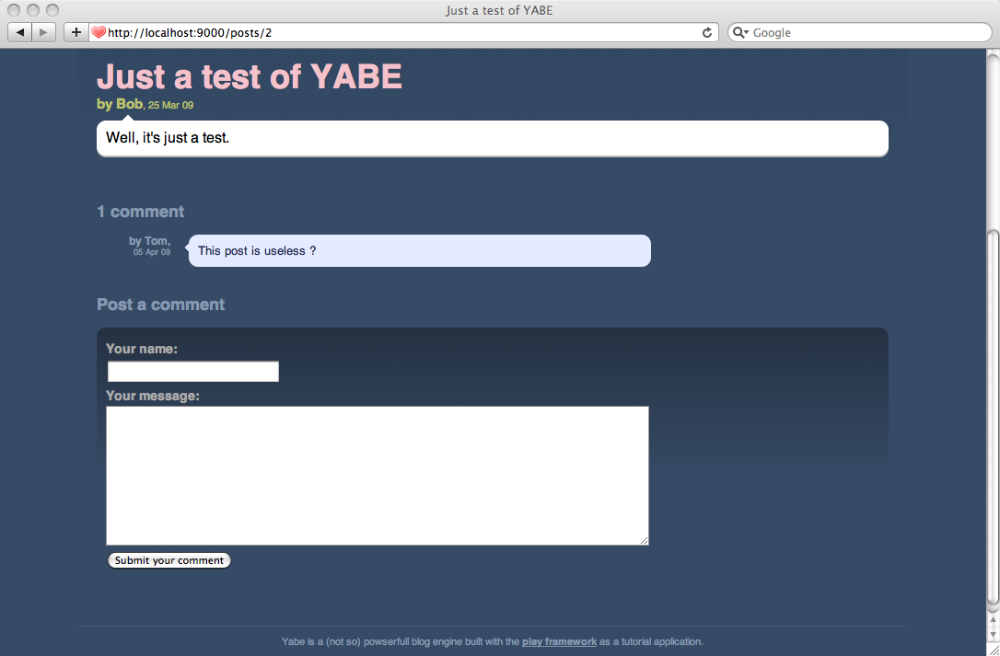

Viewing and posting comments
The blog home page is now set, and we will continue by writing the post details page. This page will show all the comments about the current post, and will include a form to post new comments.
Creating the ‘show’ action
To display the post details page, we will need a new action method on the Application controller. Let’s call it show():
public static void show(Long id) {
Post post = Post.findById(id);
render(post);
}
As you can see this action is pretty simple. We declare the id method parameter to automatically retrieve the HTTP id parameter as a Long Java object. This parameter will be extracted either from the query string, from the URL path or from the request body.
If we try to send an id HTTP parameter that is not a valid number, the id variable value will be null and Play will automatically add a validation error to the errors container.
This action will display the /yabe/app/views/Application/show.html template:
#{extends 'main.html' /}
#{set title:post.title /}
#{display post:post, as:'full' /}
Because we’ve already written the display tag, this page is really simple to write.
Adding links to the details page
In the display tag we’ve left all links empty (using #). It’s now time to make these links point to the Application.show action. With Play you can easily build links in a template using the @{…} notation. This syntax uses the router to ‘reverse’ the URL needed to call the specified action.
Let’s edit the /yabe/app/views/tags/display.html tag:
…
<h2 class="post-title">
<a href="@{Application.show(_post.id)}">${_post.title}</a>
</h2>
…
You can now refresh the home page, and click a post title to display the post.
It’s great, but it lacks a link to go back to the home page. Edit the /yabe/app/views/main.html template to complete the title link:
…
<div id="title">
<span class="about">About this blog</span>
<h1><a href="@{Application.index()}">${blogTitle}</a></h1>
<h2>${blogBaseline}</h2>
</div>
…
We can now navigate between the home page and the post detail pages.
Specifying a better URL
As you can see, the post detail page URL looks like:
/application/show?id=1
This is because Play has used the default ‘catch all’ route.
* /{controller}/{action} {controller}.{action}
We can have a better URL by specifying a custom path for the Application.show action. Edit the /yabe/conf/routes file and add this route after the first one:
GET /posts/{id} Application.show
This way the id parameter will be extracted from the URL path. You can read more about URI patterns on the manual page about Route File Syntax.
Refresh the browser and check that it now uses the correct URL.
Adding pagination
To allow users to navigate easily through posts, we will add a pagination mechanism. We’ll extend the Post class to be able to fetch previous and next post as required:
public Post previous() {
return Post.find("postedAt < ? order by postedAt desc", postedAt).first();
}
public Post next() {
return Post.find("postedAt > ? order by postedAt asc", postedAt).first();
}
We will call these methods several times during a request so they could be optimized, but they’re good enough for now. Also, add the pagination links at the top of the show.html template (before the #{display/} tag):
<ul id="pagination">
#{if post.previous()}
<li id="previous">
<a href="@{Application.show(post.previous().id)}">
${post.previous().title}
</a>
</li>
#{/if}
#{if post.next()}
<li id="next">
<a href="@{Application.show(post.next().id)}">
${post.next().title}
</a>
</li>
#{/if}
</ul>
It’s better now.
Adding the comment form
Now it’s time to set up a comments form. We’ll start by adding the postComment action method to the Application controller.
public static void postComment(Long postId, String author, String content) {
Post post = Post.findById(postId);
post.addComment(author, content);
show(postId);
}
As you can see we just reuse the addComment() method we previously added to the Post class.
Let’s write the HTML form in the show.html template (after the #{display /} tag in fact):
<h3>Post a comment</h3>
#{form @Application.postComment(post.id)}
<p>
<label for="author">Your name: </label>
<input type="text" name="author" id="author" />
</p>
<p>
<label for="content">Your message: </label>
<textarea name="content" id="content"></textarea>
</p>
<p>
<input type="submit" value="Submit your comment" />
</p>
#{/form}
You can now try posting a new comment. It should just work.

Adding validation
Currently we don’t validate the form content before creating the comment. We would like to make both fields required. We can easily use the Play validation mechanism to ensure that the HTTP parameters are correctly filled in. Modify the postComment action to add @Required validation annotations and check that no error occurs:
public static void postComment(Long postId, @Required String author, @Required String content) {
Post post = Post.findById(postId);
if (validation.hasErrors()) {
render("Application/show.html", post);
}
post.addComment(author, content);
show(postId);
}
Don’t forget to import play.data.validation.* as well.
As you can see, in case of validation errors, we re-display the post detail page. We have to modify the form code to display the error message:
<h3>Post a comment</h3>
#{form @Application.postComment(post.id)}
#{ifErrors}
<p class="error">
All fields are required!
</p>
#{/ifErrors}
<p>
<label for="author">Your name: </label>
<input type="text" name="author" id="author" value="${params.author}" />
</p>
<p>
<label for="content">Your message: </label>
<textarea name="content" id="content">${params.content}</textarea>
</p>
<p>
<input type="submit" value="Submit your comment" />
</p>
#{/form}
Note that we reuse the posted parameters to fill the HTML input values.
To make the UI feedback more pleasant for the poster, we will add a little JavaScript to automatically set focus on the comment form in case of an error. As this script uses JQuery and JQuery Tools Expose as support libraries, you have to include them. Download these two libraries to the yabe/public/javascripts/ directory and modify the main.html template to include them:
…
<script src="@{'/public/javascripts/jquery-1.4.2.min.js'}"></script>
<script src="@{'/public/javascripts/jquery.tools-1.2.5.toolbox.expose.min.js'}"></script>
</head>
Note that the current version of Play bundles a newer version of jQuery than the one used in this tutorial.
Now you can add this script to the show.html template (add it at the end of the page):
<script type="text/javascript" charset="utf-8">
$(function() {
// Expose the form
$('form').click(function() {
$('form').expose({api: true}).load();
});
// If there is an error, focus to form
if($('form .error').size()) {
$('form').expose({api: true, loadSpeed: 0}).load();
$('form input[type=text]').get(0).focus();
}
});
</script>
The comment form looks pretty cool now. We will add two more things.
First, we will display a success message after a comment is successfully posted. For that, we use the flash scope that allows us to pass messages from one action call to the next one.
Modify the postComment action to add a success message:
public static void postComment(Long postId, @Required String author, @Required String content) {
Post post = Post.findById(postId);
if(validation.hasErrors()) {
render("Application/show.html", post);
}
post.addComment(author, content);
flash.success("Thanks for posting %s", author);
show(postId);
}
and display the success message in show.html if present (add it at the top of the page):
…
#{if flash.success}
<p class="success">${flash.success}</p>
#{/if}
#{display post:post, as:'full' /}
…
The last thing we will adjust in this form is the URL used for the postComment action. As always, it uses the default catch-all route because we didn’t define any specific route. So add this route to the application routes file:
POST /posts/{postId}/comments Application.postComment
That’s done. As always, commit the version to bazaar.
Next: Setting up a Captcha.